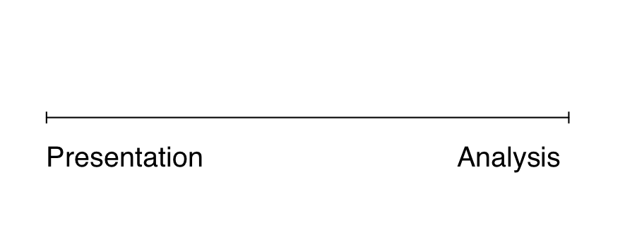
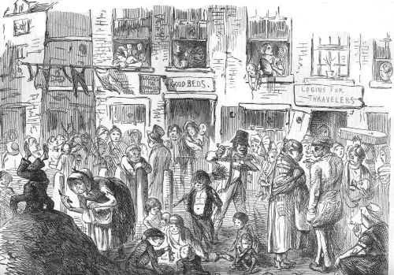
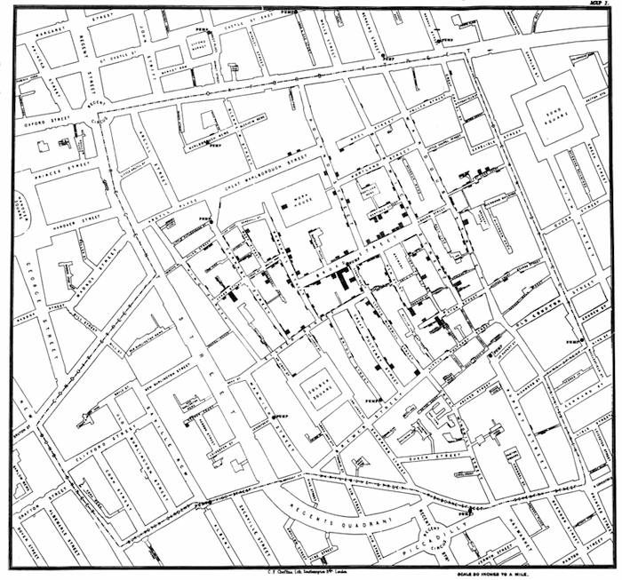
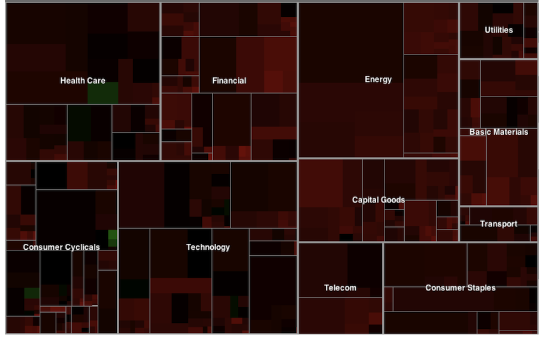
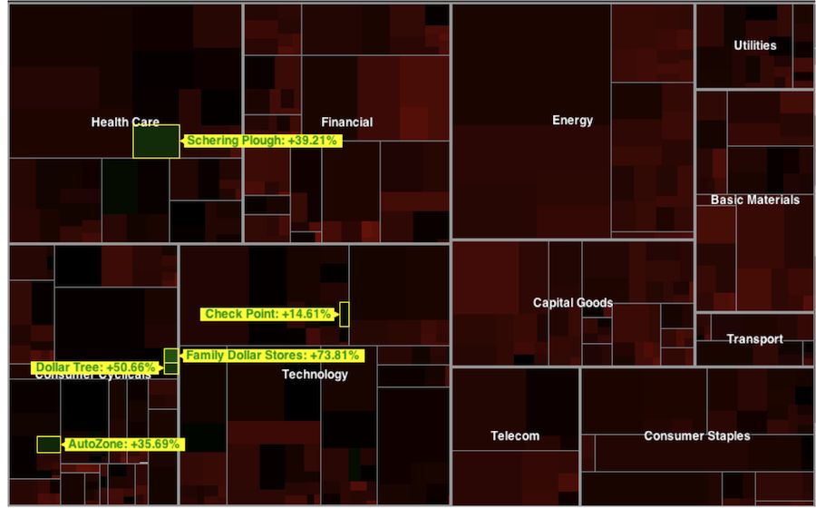
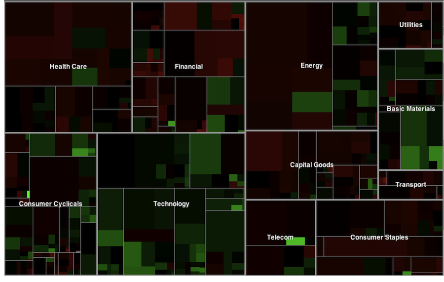
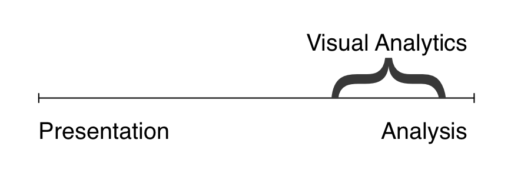
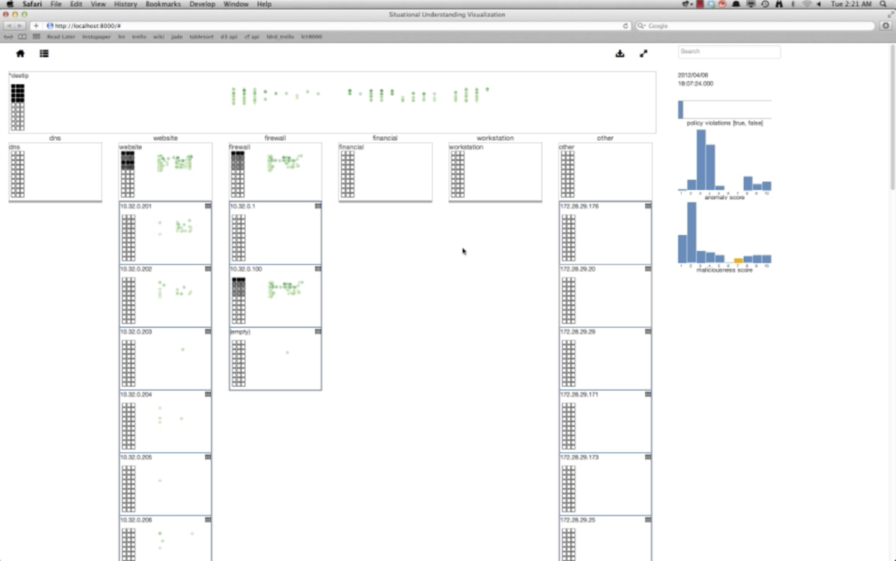
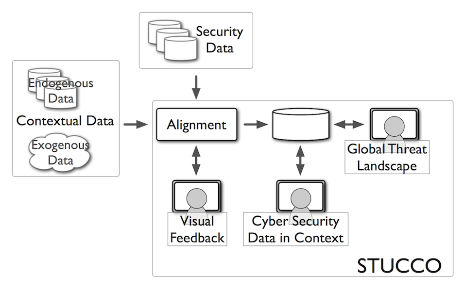

Situational Understanding Research Team
Cyberspace Sciences and Information Intelligence Research Group
Agenda
What is Visual Analytics?
Situational Understanding Research Team
Cyber Security Projects
Health Care Projects
What is Visual Analytics?
Information Visualization
The purpose of visualization is insight, not pictures
- Ben Schneiderman, 1999
Visual Analytics is not...
Static explanatory infographics
Scientific visualization
Geographic information systems (kind of)
Visual Analytics
Focus on sensemaking and analytical reasoning
Concerned with abstract data
Multidisciplinary
Information visualization + computation
Visualization

Presentation
London, 1854


Presentation
Graphics can tell a story to convince your strongest opponents
Analysis



Analysis
Visualization can provide the BIG PICTURE. Anomalies, like winners over the past 12 months, and overall trends, like a market rebound, pop out at you preattentively
This visualization is a tool to explore the data
Visual Analytics

Situational Understanding Research Team
Mission
Build tools for domain experts that facilitate situational understanding and insight discovery from large, complex, (streaming), heterogeneous data
Approach to Visual Analytics
Data is uncertain
Automate the repetitive and the mundane
Algorithms should not relearn domain knowledge
Users' domain knowledge should be captured and used
Algorithms should be transparent and understandable
Simple displays are good (and can be combined)
Give users time to slow down to explore the data
Research Areas
Mathematics
Probabilistic modeling
Graph modeling & algorithms
Theorems
Human-Computer Interaction
Information visualization
Use-centered design
Domain and user modeling
User testing / experimentation
Machine Learning
Unsupervised learning
Active learning
Online learning
Computing Platforms
Streaming platforms & algorithms
Distributed storage & algorithms
Mobile computing
Cyber Security Projects
NV
Nessus Vulnerability Visualization
Nessus Visualization :: Problem
Vulnerability assessment tools can expose weak points within a system
These tools can produce very large data sets in medium/large networks
It can be difficult to get the big picture of the security posture of your network from current user interfaces for vulnerability assessment tools
It is impossible to compare scans to determine the differences between them - has the network become more vulnerable or more secure?
Users domain knowledge is not taken into account
Nessus Visualization :: Approach
Develop a web-based visual analytics environment for understanding and prioritizing vulnerability assessment scans
Zoomable Treemap displays machines organized by user-defined groupings and sized and colored by the number and severity of vulnerabilities
Multiple filters are provided to interact with the data
Integrate domain knowledge by groupings and tagging high-value assets
A Scalable Framework for Timely Discovery and Situational Understanding of Cyber Attacks
Situ :: Problem
Rapidly discovering novel and sophisticated cyber attacks from masses of heterogeneous data and providing situational understanding to analysts are ongoing problems in computer network defense
Network defense analysts maintain continually evolving mental models that allow them to differentiate between malicious and benign traffic. However, current systems do not exploit this knowledge
Situ :: Approach
Anomaly detection to remove typical behavior from further analysis
Event classification to label events as benign or malicious and classify and link malicious events into phases of the kill chain
Visual analytics to present results and provide the user interface for visually capturing knowledge
User driven feedback to make suggestions for labeling and capture knowledge from domain experts
Situ

Stucco
Situation and Threat Understanding by Correlating Contextual Observations
Stucco :: Problem
Security analysts do not have access to context when analyzing security events
There are many data sources that may provide context, but they are not systematically collected or correlated with security events or integrated into analytic and visualization tools
Analysts currently mentally juggle inputs from a growing number of data streams
Stucco :: Approach
Integrate and visualize social media, new articles and other indicators in context with traditional cyber security data
Provide concept graph which users and systems can query to gain context for analysis
Display trends of security concepts that relate to a user's environment
Stucco

Health Care Projects
CMS Geographic Variation (1)
Problem: health indicators health indicators vary both geographically and temporally - how can these be visualized?
Approach: combine visualizations to show how regions compare by value and by geographic location